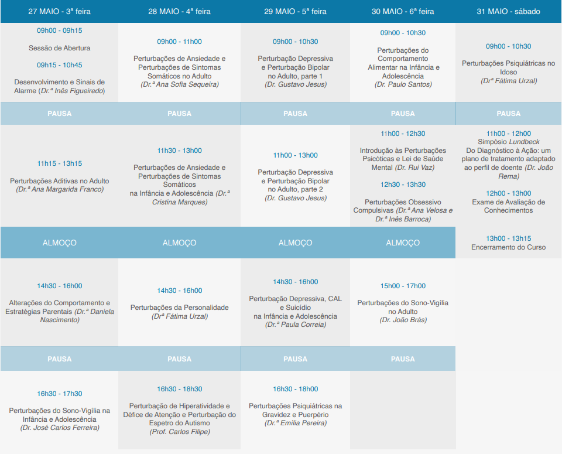

Saúde Mental
Dos 0 Aos 100
Saúde Mental
Dos 0 Aos 100
Curso de Atualização em Psiquiatria para Medicina Geral e Familiar - 1ª edição
5 de Abril a 3 de Maio de 2021 (Online)
5 de Abril a 3 de Maio de 2021 (Online)
Contextualização
Em Portugal, a doença mental é uma das principais causas de incapacidade e um dos motivos mais frequentes de consulta em Medicina Geral e Familiar. Os Médicos de Família são muitas vezes o primeiro contacto com diversas famílias pelo que o seu papel na identificação de disfuncionalidades torna-se fulcral, nomeadamente a nível da saúde mental, desde a infância até à velhice.Desta forma, desenvolvemos este Curso de Atualização em Psiquiatria para Medicina Geral e Familiar com o intuito de promover formação para Médicos Internos e Especialistas em Medicina Geral e Familiar, desde o diagnóstico à intervenção em crianças, adolescentes, adultos e idosos com patologia mental ou que estão em situações de risco associadas.
Objectivos
- Rever as características clínicas e diagnósticas das principais perturbações mentais (em todas as idades) em Cuidados de Saúde Primários.
- Explorar o papel do Médico de Família na abordagem de perturbações mentais, tanto na intervenção clínica direta como no encaminhamento para outra especialidade (quando, como, e para onde).
- Analisar o papel do Médico de Família em situações de risco associadas à saúde mental e intervenção familiar.
- Explorar diferentes abordagens terapêuticas nas principais perturbações mentais (em todas as idades) em Cuidados de Saúde Primários.
Metodologia
- O curso incluirá duas abordagens metodológicas:
- Seminários – que abordarão os principais tópicos do programa do curso.
- Casos Clínicos – que permitirão a aplicação dos conceitos abordados nos seminários em situações clínicas específicas baseadas na experiência clínica da vida real.
- Duração: 35 horas
Avaliação
A avaliação dos participantes será baseada em:- 75% - Presença em 100% dos seminários realizados.
- 25% - Exame final escrito sob a forma de teste de escolha múltipla (TEM).
Assiduidade
- A frequência em pelo menos 17 dos 21 seminários do curso é obrigatória para a conclusão do curso.
- A realização do TEM é obrigatória para a conclusão do curso.
Comissão Organizadora
Inês Barroca
Centro Hospitalar de Lisboa Ocidental
Médica Interna de Psiquiatria da Infância e Adolescência
Catarina Melo Santos
Centro Hospitalar de Lisboa Ocidental
Médica Interna de Psiquiatria
Inês Jorge Figueiredo
ACeS Dão Lafões
Médica Especialista em Medicina Geral e Familiar
Lúcia Costa
Centro Hospitalar Tondela-Viseu
Médica Interna de Psiquiatria
Programa
Download do Programa em formato PDF
Formadores
Desenvolvimento Normal e Sinais de Alarme – Dr. Hélder Aguiar
Perturbação de Hiperatividade e Défice de Atenção e Perturbação do Espetro do Autismo – Dr. Carlos Filipe
Perturbações Aditivas no Adulto – Dra. Inês Homem de Melo
Perturbações Aditivas na Infância e Adolescência – Dra. Patrícia Monteiro
Perturbações de Ansiedade e Perturbações de Sintomas Somáticos no Adulto – Dra. Sofia Sequeira
Perturbações de Ansiedade e Perturbações de Sintomas Somáticos na Infância e Adolescência – Dr. Cristina Marques e Dr. Inês Oliveira
Perturbação Obsessivo-Compulsiva na Infância e Adolescência – Dr. Georgina Maia
Perturbações do Sono-Vigília no Adulto – Dr. David Mota
Perturbação psiquiátrica na gravidez – Dra. Inês Duarte e Silva
Perturbação Obsessivo-Compulsiva no Adulto – Dr. Ricardo Moreira
Perturbação Depressiva e Perturbação Bipolar na Infância e Adolescência – Dra. Paula Correia
Espetro da Esquizofrenia e Outras Perturbações Psicóticas na Infância e Adolescência – Dra. Filipa Sousa
Espetro da Esquizofrenia e Outras Perturbações Psicóticas no Adulto – Dra. Sara Carneiro
Perturbações Psiquiátricas no Idoso – Dra. Fátima Urzal
Alterações do Comportamento e Estratégias Parentais – Dra. Filipa Sousa
Perturbações do Comportamento Alimentar na Infância e Adolescência – Dr. Paulo Santos
Perturbação Depressiva e Perturbação Bipolar no Adulto - Dr. Gustavo Jesus
Perturbações do Sono-Vigília na Infância e Adolescência – Dra. Paula Vilariça
Disfunções Sexuais – Dr. André Ribeirinho
Disforia de género – Dr. Rui Ferreira Carvalho
Inscrição
Todas as vagas foram preenchidas.Será dada prioridade aos inscritos em 2020. Caso existam vagas sobrantes, será anunciada a data de abertura de vagas e como poderá ser feita a inscrição.
- Público-Alvo: Médicos Internos e Especialistas em Medicina Geral e Familiar
- Preço: 50€ (inclui material de apoio e certificados)
Sabias que esta primeira edição do curso será ainda mais especial porque tem um cariz solidário?
- A organização do evento contará com o apoio logístico da Associação Saúde em Português, uma ONGD e IPSS com 26 anos de existência e uma vasta ação humanitária na área da saúde. Para além de parte das receitas reverteram para esta associação, a tua inscrição no curso, sob a forma de donativo mínimo de 50€, é dedutível em sede de IRS nos termos do nº1 al. b) do artigo 63 e em sede de IRC nos termos do artigo 62, nº3, alínea a), dos Estatutos dos Benefícios Fiscais, e são majorados em 30% para empresas e IRS categoria B, nr 4 do artº 62 EBF. Para mais informações sobre esta associação visita o site www.saudeportugues.org e fica a conhecer mais sobre a sua ação em Portugal e no mundo.
Contactos
Com o patrocínio científico da Ordem dos Médicos

Patrocinador Principal
Patrocinador

Apoios